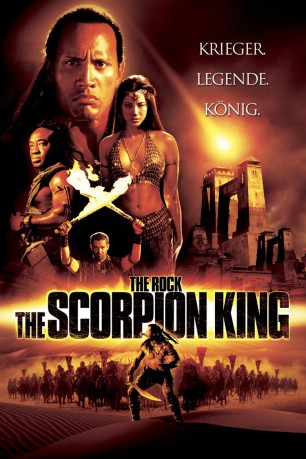

#1238 The Scorpion King
 
 IMDB-Wertung: 5.5 / 10
IMDB-Wertung: 5.5 / 10  Metascore: 45
Metascore: 45 
Vor langer Zeit im Orient: Mathayus (Dwayne Johnson), einer der wenigen noch lebenden Akkadianer, entkommt nur knapp dem Tode bei einer Auseinandersetzung mit dem diabolischen Memnon und dessen Zauberin. Zwei seiner Wegbegleiter bezahlen allerdings mit dem Leben. Von Haß und Wut erfüllt, schwört Mathayus Rache...
Jahr: 2002
Dauer: 92 Minuten
FSK: 16
Land: USA Studio: Universal PicturesTonspuren: DD5.1 - ,
Untertitel:
Auflösung: 1080p (1920x816) Größe: 7833 MB
Genre: Action, Abenteuer, Fantasy, Thriller
Regisseur: Chuck Russell
Drehbuch: Stephen Sommers, Jonathan Hales, Stephen Sommers, William Osborne, David Hayter
Soundtrack: John Debney
Darsteller:
 Dwayne Johnson als Mathayus
Dwayne Johnson als Mathayus- Steven Brand als Memnon
 Michael Clarke Duncan als Balthazar
Michael Clarke Duncan als Balthazar Kelly Hu als The Sorceress
Kelly Hu als The Sorceress Bernard Hill als Philos
Bernard Hill als Philos Grant Heslov als Arpid
Grant Heslov als Arpid Peter Facinelli als Takmet
Peter Facinelli als Takmet Ralf Moeller als Thorak
Ralf Moeller als Thorak Branscombe Richmond als Jesup
Branscombe Richmond als Jesup Roger Rees als King Pheron
Roger Rees als King Pheron- Sherri Howard als Queen Isis
 Conrad Roberts als Chieftain
Conrad Roberts als Chieftain Joseph Ruskin als Tribal Leader
Joseph Ruskin als Tribal Leader Nils Allen Stewart als Torturer
Nils Allen Stewart als Torturer- Scott L. Schwartz als Torturer
- Michael Hilow als Guard at Ant Pit
- Nick Hermz als Guard at Ant Pit
- Wesley John als Guard at Gomorrah Gate
- Barry Kramer als Sword Merchant
- K.D. Aubert als Harlot
- Sonia Vera als Harlot
- Angelica Castro als Harlot
 Al Leong als Asian Training Master
Al Leong als Asian Training Master- Marcus Young als Asian Training Fighter
 Paul Sloan als Soldier
Paul Sloan als Soldier- Talani Rabb als Harem Girl
- Sean Michael Afable als Boy at Well
- Adoni Maropis als Doubting General
 Bernard White als Falconmaster
Bernard White als Falconmaster- Amy Hunter als Warrior Woman
- Diana R. Lupo als Warrior Woman
- Nikki Flux als Warrior Woman
 Summer Altice als Warrior Woman
Summer Altice als Warrior Woman- Peter Quartaroli als Vision Archer
 Richard Cetrone als Barbarian Guard
Richard Cetrone als Barbarian Guard- Kitana Baker als Barbarian Woman , uncredited
- Christie Campagna als Bazaar Side Waitress , uncredited
- Tracy Dali als Harlot , uncredited
- Wayne Eric als Red Turban Soldier , uncredited
- Zuhair Haddad als Bazaar Merchant , uncredited
- Jamie Hagan als Harlot , uncredited
 Tyler Mane als Barbarian Chieftain , uncredited
Tyler Mane als Barbarian Chieftain , uncredited Julie Michaels als Harem Girl , uncredited
Julie Michaels als Harem Girl , uncredited George D. Miklos als Vendor , uncredited
George D. Miklos als Vendor , uncredited- Radhaa Nilia als Harlot , uncredited
- Somaya Reece als Harlot , uncredited
- Mailon Rivera als Falconer , uncredited
- Rachelle Roderick als Balthazar's Warrior Women , uncredited
 Marcio Rosario als Red Turban , uncredited
Marcio Rosario als Red Turban , uncredited- Terence J. Rotolo als Palace Guard 2 , uncredited
Datei: X:\5-Pentalogie(A-Z)\Mumie\Scorpion King, The (2002, FSK16, 1920x816).mkv seit 11.06.2015
Festplatte: HD Collection-3(N-Z)-6(A-Z)
 Es gibt insgesamt 9 Filme in der Gruppe '5-Pentalogie(A-Z)\Mumie'
Es gibt insgesamt 9 Filme in der Gruppe '5-Pentalogie(A-Z)\Mumie'